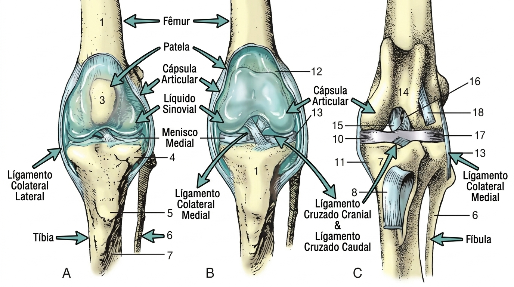

Articulações Sinoviais
Também chamada de articulações verdadeiras, as articulações sinoviais são dependentes de vários elementos articulares com características funcionais específicas. São diferenciadas de acordo com a quantidade de ossos envolvidos na articulação e com grau de movimentação, exigindo uma arquitetura um tanto complexa que envolve diversos componentes.
Elementos das Articulações Sinoviais
Para que ocorra uma movimentação com livre deslizamento entre as superfícies articulares, sem prejuízos à saúde e com controle de amplitude (extensão e flexão), as articulações sinoviais são dependentes de seus componentes.

A = Face Cranial B = Face Cranial C = Face Caudal
Superfície Articular (Face Articular) – É revestida por cartilagem hialina. Essa cartilagem acentua a curvatura do osso subjacente, estabelecendo o contato entre as unidades ósseas, aumentando a proteção de impactos. É um material maleável e translúcido que, com o avançar da idade torna-se amarelado, indicando perda da sua elasticidade.
Note: De acordo com Dyce, Sack e Wensing (2010, p. 18) a superfície articular é insensível e avascular. Assim, sua obtenção de nutrientes é por difusão, que é auxiliada pela porosidade da matriz da cartilagem, que retém e libera fluido conforme os movimentos, a compressão e o alívio da articulação.
Cápsula Articular – É composta por duas camadas: a camada externa/fibrosa e a camada interna denominada de membrana sinovial. A camada externa envolve a articulação e fixa-se aos ossos, dando continuidade ao periósteo, e conferindo estabilidade mecânica para a articulação.
-
Camada Interna – Também conhecida como membrana sinovial, a camada interna reveste toda a cavidade articular, é a
membrana responsável
pela homeostase do líquido sinovial, lideradas pelos sinoviócitos.
Sendo composta pelos sinoviócitos tipo A, responsáveis pela fagocitose, e os sinoviócitos tipo B que, produzem e secretam
proteínas.
Líquido Sinovial ou Sinóvia - É um líquido amarelo-claro e viscoso que preenche as articulações. Sua principal função é lubrificar a articulação, reduzindo a fricção entre as faces articulares e proteger contra certas lesões mecânicas. A sinóvia é composta por ácido hialurônico, açúcares, eletrólitos e enzimas envolvidos no suprimento de nutrientes da cartilagem.
Cavidade Articular – É o espaço onde o líquido sinovial é depositado, em quantidade suficiente para permitir o adequado funcionamento da articulação.
Ligamentos – São encontrados na maioria das articulações sinoviais, mantendo a proximidade entre as unidades ósseas. As articulações são reforçadas por meio de ligamentos articulares capsulares, intra-articulares ou extracapsulares.
- Ligamentos Capsulares – Apresentam-se como espessamentos da capsula articular (ex.: ligamentos patelares).
-
Ligamentos Intra-articulares – São independentes da capsula articular e localizam-se dentro da cavidade articular, imersos
no líquido sinovial,
ligando um osso ao outro. (ex.: ligamento cruzado da articulação do joelho). - Ligamentos Extracapsulares – São ligados externamente à capsula articular (ex.: ligamentos colaterais do joelho).
Discos e Meniscos – São formações fibrocartilaginosas. Os discos são placas circulares localizadas entre as superfícies articulares, podendo auxiliar na adaptação ou na absorção de impactos sobre as peças ósseas (ex.: articulação temporomandibular). Já os meniscos têm o formato semilunar (meia-lua), encontrados na articulação fêmoro-tíbio-patelar.